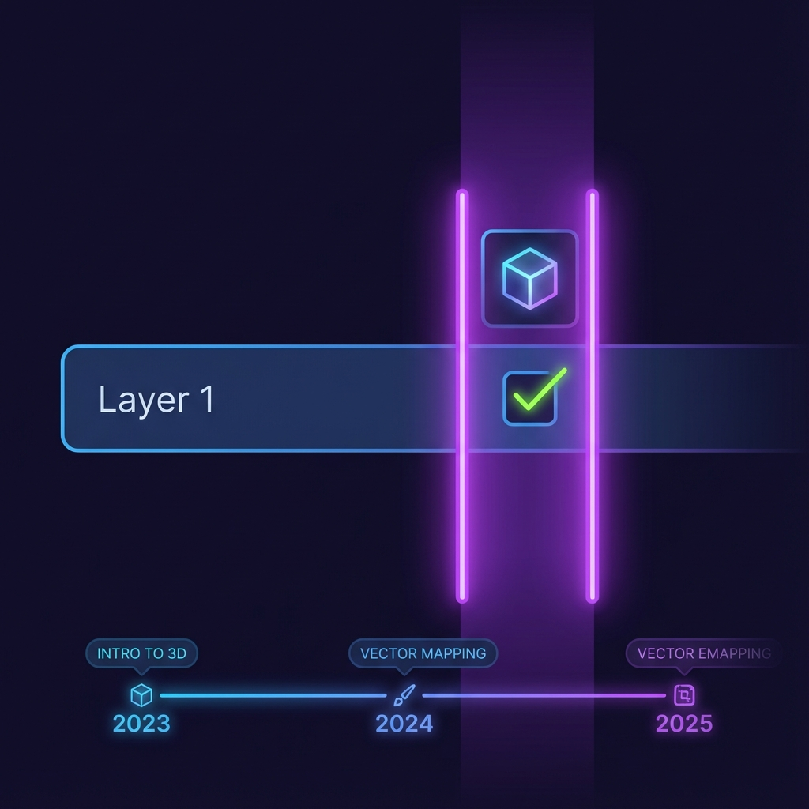
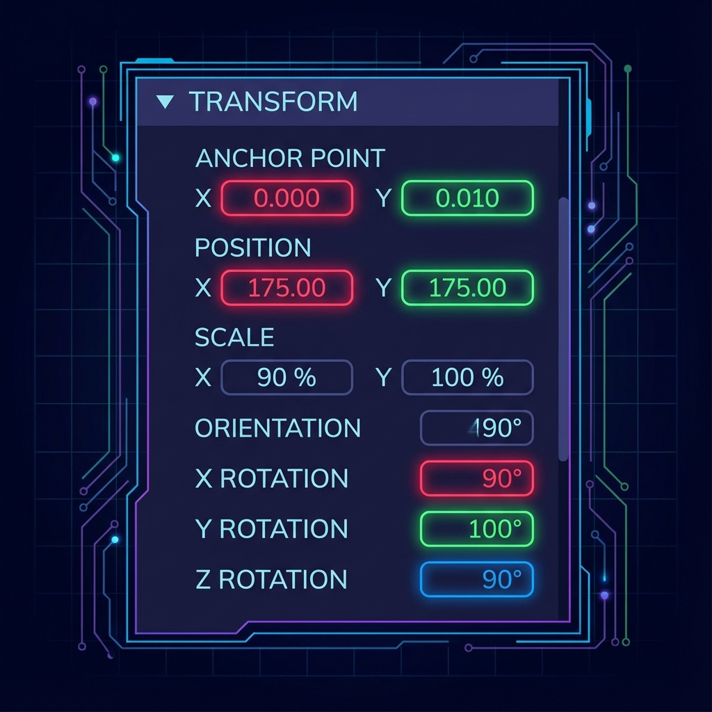
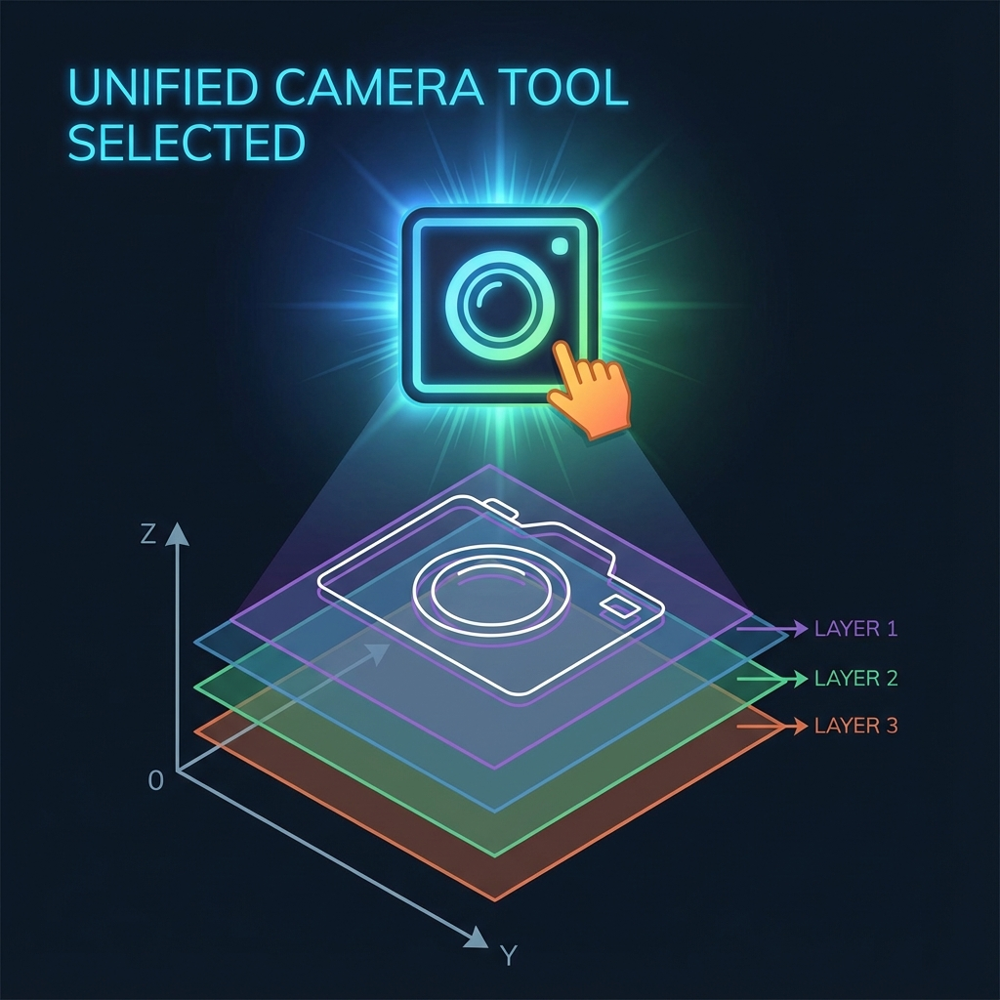

🎯 このミッションのゴール
Aeでは、全てのレイヤーを「3Dレイヤー」して、仮想的な3D空間に配置することができます。 文字や写真を回転させたり、カメラを動かして奥行きのある映像を作りましょう。
🧊 3Dスイッチをオンに！
13Dレイヤー化する

- タイムラインパネルのレイヤーにある「3Dスイッチ（立方体のアイコン）」をクリックしてオンにします。
- スイッチが見当たらない場合は、下部の「スイッチ/モード」ボタンを押してください。
- トランスフォームを開くと、位置や回転に「Z軸」が増えているのが分かります！
23次元で動かす

- Y回転の数値をいじってみましょう。ドアが開くようにパタパタ回転します。
- Z位置（奥行き）を動かすと、手前に迫ってきたり、遠くにへこんだりします。
- 複数のレイヤーをZ軸上で前後に配置すると、立体感が生まれます。
3カメラで撮影する
レイヤーを動かすのではなく、「カメラ」の方を動かします。

- メニュー「レイヤー」→「新規」→「カメラ」を作成します（設定は「2ノードカメラ」がおすすめ）。
- ツールバーから「統合カメラツール（C）」を選びます。
- 画面・コンポジションパネルをドラッグすると…視点がグルグル動いて、まるで自分が空間の中に入ったような感覚になります！
🏁 Mission 4 クリア条件
✅ レイヤーをY軸でクルクル回せた！
✅ カメラを使って、斜めからのアングルを作れた！